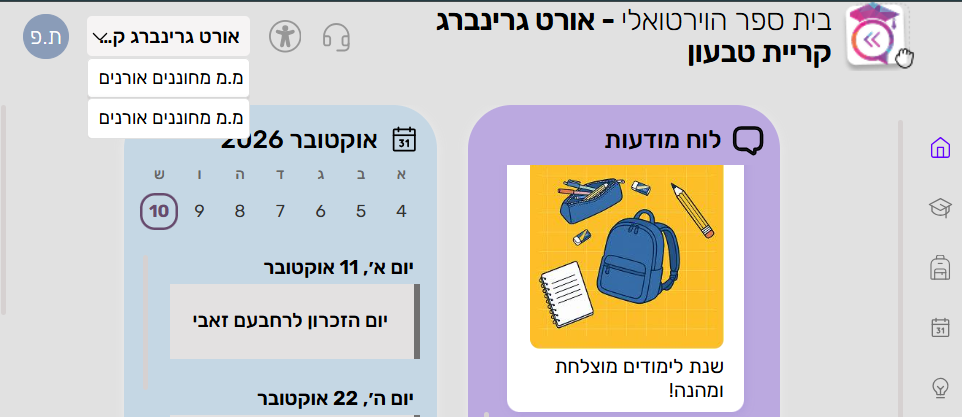
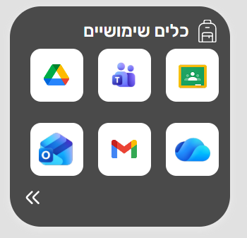
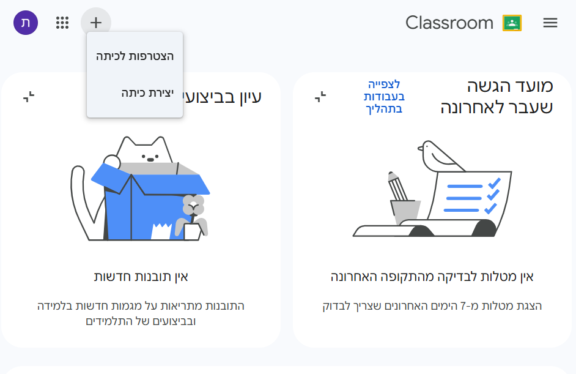
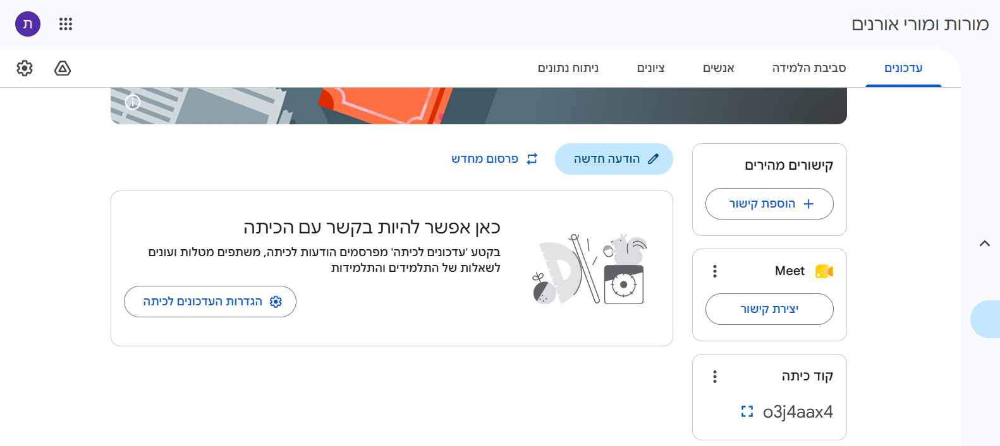

0
באיזה חשבון עובדים?
במרחב "מ.מ מחוננים אורנים" אין Classroom. צריך Classroom של חינוך, ולכן:
- יש לך בית ספר נוסף בבית הספר הווירטואלי? עובדים דרכו.
- אין? לטובת ההתנסות לוקחים חשבון של מורה מבית ספר אחר.
⚠️ בתוך הקבוצה – כל אחת ואחד בחשבון אחר. אי אפשר להיות מורה ותלמיד באותו חשבון.
1
נכנסים ל-Classroom
- בבית הספר הווירטואלי, למעלה בצד שמאל, בוחרים את בית הספר האחר (לא "מ.מ מחוננים אורנים").

- ב"כלים שיתופיים" לוחצים על Classroom (הסמל הירוק).

2
יוצרים כיתה
- לוחצים על + למעלה ← יצירת כיתה.
- נותנים לכיתה שם (למשל "התנסות Meet – הקבוצה של נועה") ולוחצים יצירה.

3
יוצרים קישור Meet ומזמינים
בתוך הכיתה, בלשונית עדכונים:
- בכרטיס Meet לוחצים יצירת קישור. זה הקישור הקבוע של הכיתה.
- בכרטיס קוד כיתה מעתיקים את הקוד ושולחים אותו לשני האחרים בקבוצה.
- אפשר גם להזמין במייל: לשונית אנשים ← הזמנת תלמידים.

4
מצטרפים לכיתות של האחרים
- במסך הראשי של Classroom: + ← הצטרפות לכיתה.
- מקלידים את הקוד שקיבלתם ולוחצים הצטרפות.
- חוזרים על זה עם הקוד השני.
🎯 בסוף השלב: כל אחת ואחד מורים בכיתה אחת עם 2 תלמידים, ותלמידים ב-2 כיתות אחרות.
5
נפגשים ב-Meet
בוחרים כיתה של אחת או אחד מכם, ושלושתכם לוחצים על קישור ה-Meet שלה.
רשימת בדיקה למרוץ:
- לכל אחת ואחד יש כיתה משלו
- כל אחת ואחד תלמידים בשתי הכיתות האחרות
- בכל כיתה נוצר קישור Meet
- שלושתכם באותו Meet
🎉 הצלחתם? מרימים יד וקוראים: "אנחנו ב-Meet!"
6
בסוף: מעלים את התוצר
- + ← הצטרפות לכיתה עם הקוד של הכיתה "מורות ומורי אורנים":
o3j4aax4
- מעלים את התוצר של הקבוצה.
- כותבים בפוסט את שמות חברות וחברי הקבוצה (החשבון לא תמיד שלכם).